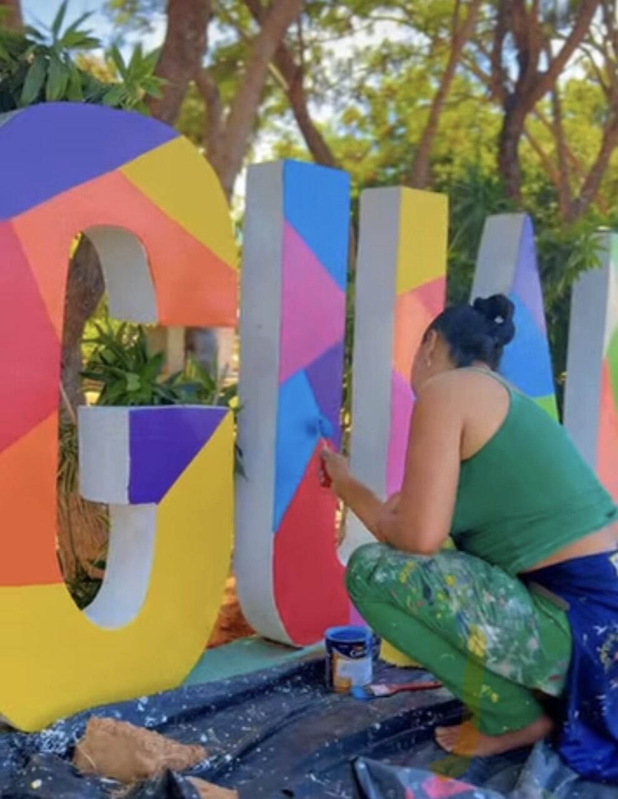
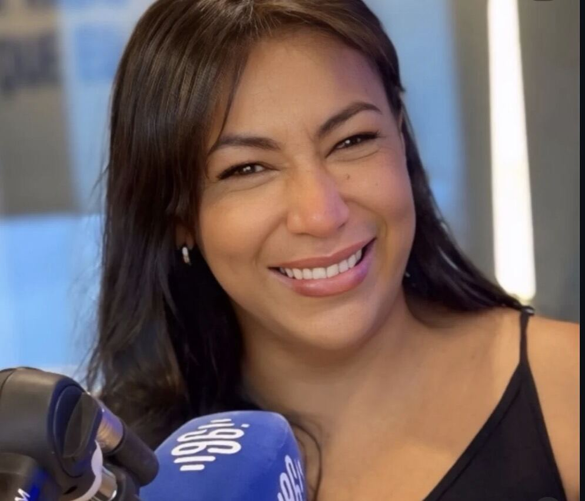
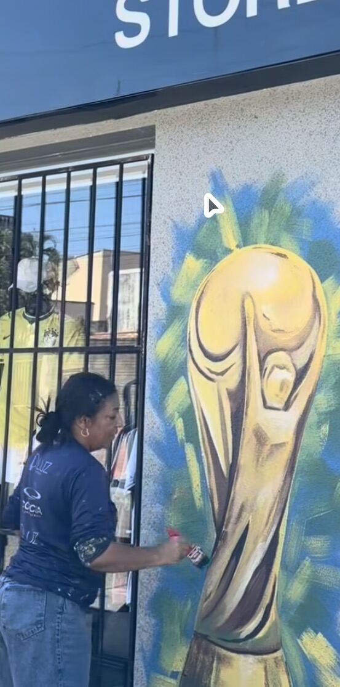
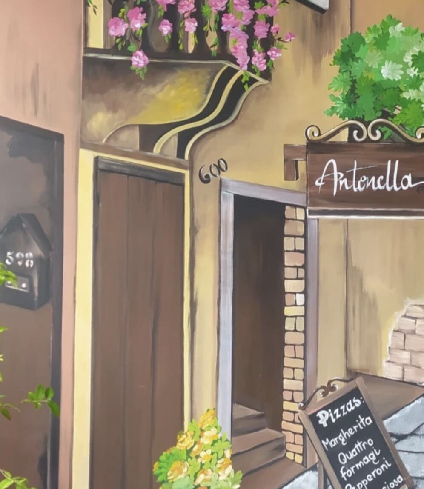
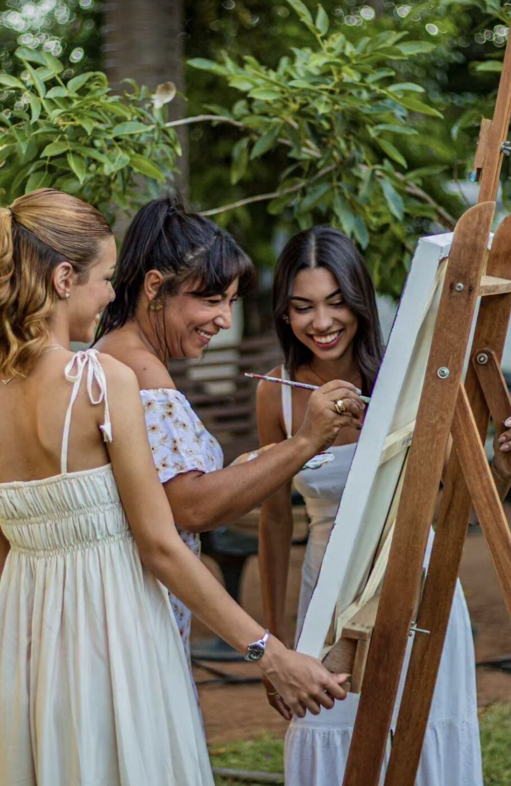

Transformo paredes, telas e vozes em cor. Arte plástica, murais que reinventam ambientes e aulas de canto presenciais — feitas com a mesma paixão de família.
Lete Diedrichs é artista plástica e muralista, conhecida por transformar paredes e ambientes em grandes composições coloridas — de letreiros e fachadas a murais figurativos pintados à mão. Ao lado da pintura, é também professora de canto, com aulas presenciais dedicadas a quem quer descobrir e desenvolver a própria voz.
Seu trabalho circula entre a tela, a parede e o palco: pinta em ateliê, em obras externas e compartilha esse universo com a família — que também é tela, aluno e plateia.
Pintura em tela e composições autorais.
Arte em parede — transformando ambientes.
Aulas presenciais, no ritmo de cada aluno.
Um jeito de criar que se compartilha em casa.

De letreiros escultóricos a fachadas pintadas à mão, cada parede vira uma composição só sua — pensada para o espaço, a luz e quem vai passar por ali todos os dias.


As aulas de canto de Lete são presenciais e pensadas para cada aluno — do primeiro contato com a própria voz até a construção de repertório e presença de palco. A mesma sensibilidade que guia o pincel guia também a respiração, a afinação e a interpretação.
"Arte é a forma que encontrei de contar histórias — seja com tinta, seja com a voz."

Para Lete, arte e família caminham lado a lado. Momentos de pintura viram encontro, ensino e memória — telas montadas ao ar livre, pincel dividido entre gerações e a mesma alegria de criar acompanhando cada etapa.
É esse espírito — de oficina aberta, afetiva e sem pressa — que também aparece nas aulas de canto e nos murais: arte feita para ser compartilhada.
Tome o hábito de acordar feliz, não importa o que você esteja passando.
A vida pode não estar perfeita, mas também poderia ser muito pior.
Ore sempre e seja grato.
Seja um mural para transformar um ambiente, uma tela autoral ou aulas de canto presenciais — Lete Diedrichs está sempre pronta para uma nova composição.